Lipidomics data processing
Source:vignettes/articles/tutorial-03-lipidomics-workflow.Rmd
tutorial-03-lipidomics-workflow.RmdThis tutorial follows a complete postprocessing and quality control
workflow for a targeted lipidomics analysis. Starting from integrated
peak areas, we work towards a curated table of lipid species
concentrations ready for statistical analysis. Along the way we assess
the analytical and data quality of the run, normalise and quantify
against internal standards, correct for run-order drift and
between-batch effects, filter features on QC criteria, and export the
result. The dataset (a longitudinal plasma study (sPerfect)
measured across six batches) is realistic enough to show the decisions a
real analysis demands.
1. Set up a project
A new analysis is easiest to manage inside an RStudio or Positron project (see Using RStudio Projects or the Positron User Guide), with a predictable folder layout that keeps the raw data, the exported results, and the processing notebook apart:
my_study/
├── data/ # raw data and metadata files
├── output/ # exported results
└── analysis.Rmd # your processing notebookAn R Notebook (.Rmd) or Quarto
(.qmd) document is a natural home for a workflow like this
one: it interleaves code with prose, keeping a record of every decision
beside the result it produced. With the project in place, load the
package to begin:
2. Importing analysis results
We begin by importing the MRMhub result file, which holds the areas
of the integrated peaks (features) for every processed raw data file.
The same file also carries the peak retention times and widths and
metadata read from the mzML files, such as acquisition time stamps and
precursor/product m/z values; setting
import_metadata = TRUE brings those across as well. The
imported data lands in the dataset_orig slot and is copied
to the working dataset. Printing the object at any stage
with print(myexp) reports its processing status, and in
RStudio you can expand myexp in the Environment pane.
myexp <- MRMhubExperiment(title = "sPerfect")
myexp <- import_data_mrmhub(
myexp,
path = "./datasets/sPerfect_MRMhub.tsv",
import_metadata = TRUE
)✔ Imported 499 analyses with 503 features.ℹ feature_area selected as default feature intensity. Modify with `set_intensity_var()`.✔ Analysis metadata associated with 499 analyses.✔ Feature metadata associated with 503 features.3. A glimpse on the imported data
The data is stored in long format (one row per analysis–feature pair)
so each measurement carries its own area, retention time, and metadata
side by side. Print the working table below, or enter
View(myexp@dataset_orig) in the console to browse and
filter it in the RStudio viewer. For routine access it is cleaner to use
get_analyticaldata(myexp, annotated = TRUE), which returns
the same data already joined to its sample and feature annotations.
print(myexp@dataset)
# A tibble: 250,997 × 21
analysis_order analysis_id acquisition_time_stamp qc_type batch_id sample_id
<int> <chr> <dttm> <chr> <chr> <chr>
1 1 Longit_BLAN… 2017-10-20 14:15:36 SBLK 1 NA
2 1 Longit_BLAN… 2017-10-20 14:15:36 SBLK 1 NA
3 1 Longit_BLAN… 2017-10-20 14:15:36 SBLK 1 NA
4 1 Longit_BLAN… 2017-10-20 14:15:36 SBLK 1 NA
5 1 Longit_BLAN… 2017-10-20 14:15:36 SBLK 1 NA
6 1 Longit_BLAN… 2017-10-20 14:15:36 SBLK 1 NA
7 1 Longit_BLAN… 2017-10-20 14:15:36 SBLK 1 NA
8 1 Longit_BLAN… 2017-10-20 14:15:36 SBLK 1 NA
9 1 Longit_BLAN… 2017-10-20 14:15:36 SBLK 1 NA
10 1 Longit_BLAN… 2017-10-20 14:15:36 SBLK 1 NA
# ℹ 250,987 more rows
# ℹ 15 more variables: replicate_no <int>, specimen <chr>, feature_id <chr>,
# feature_class <chr>, feature_label <chr>, is_istd <lgl>,
# is_quantifier <lgl>, analyte_id <chr>, istd_feature_id <chr>,
# feature_rt <dbl>, feature_area <dbl>, feature_height <dbl>,
# feature_fwhm <dbl>, feature_width <dbl>, feature_intensity <dbl>4. Analytical design and timeline
Before touching the signals, it is worth understanding how the run
was structured. The plot below lays out the batch boundaries, the
positions of the quality control (QC) samples, and the date, duration,
and run time of the analysis: context that informs every later choice
about drift, batches, and which QC type to trust. Setting
show_timestamp = TRUE overlays acquisition times and
reveals any long interruptions within or between batches.
plot_runsequence(
myexp,
qc_types = NA,
show_batches = TRUE,
batch_zebra_stripe = TRUE,
batch_fill_color = "#fffbdb",
segment_linewidth = 0.5,
show_timestamp = FALSE
)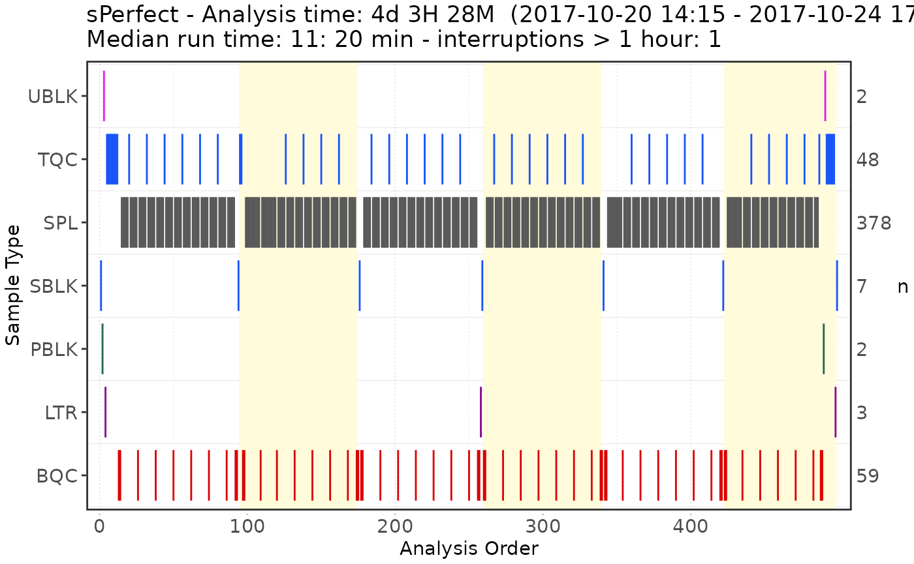
Figure 1. Run sequence of the analysis (batch structure, QC-sample positions, and acquisition timeline).
5. Overview of chromatographic separation
A first look at the chromatography confirms that species elute where expected. The plot shows the retention time distribution of all detected lipid species across the study samples, arranged by class.
plot_abundanceprofile(
myexp,
variable = "rt",
qc_types = "SPL",
log_scale = FALSE,
density_strip = TRUE,
show_sum = FALSE,
x_label = NA,
feature_map = "lipidomics"
)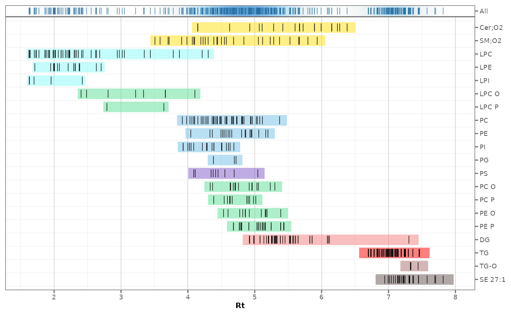
Figure 2. Retention-time distribution of all detected lipid species across the study samples.
6. Peak picking QC
Within a lipid class, retention time increases smoothly with chain
length and decreases with the number of double bonds, so plotting RT
against total carbon count (coloured by double-bond number) turns
peak-picking errors into visible outliers. Species whose residual from
the class trend exceeds outlier_residual_min are labelled,
flagging likely misannotations or mis-integrated peaks. The check is
only as strong as the coverage behind it: here just a few species per
class were measured, so the trend is poorly constrained for some classes
and double-bond counts.
plot_rt_vs_chain(
myexp,
qc_types = "SPL",
x_var = "total_c",
outlier_residual_min = 0.3,
font_base_size = 8,
point_size = 1
)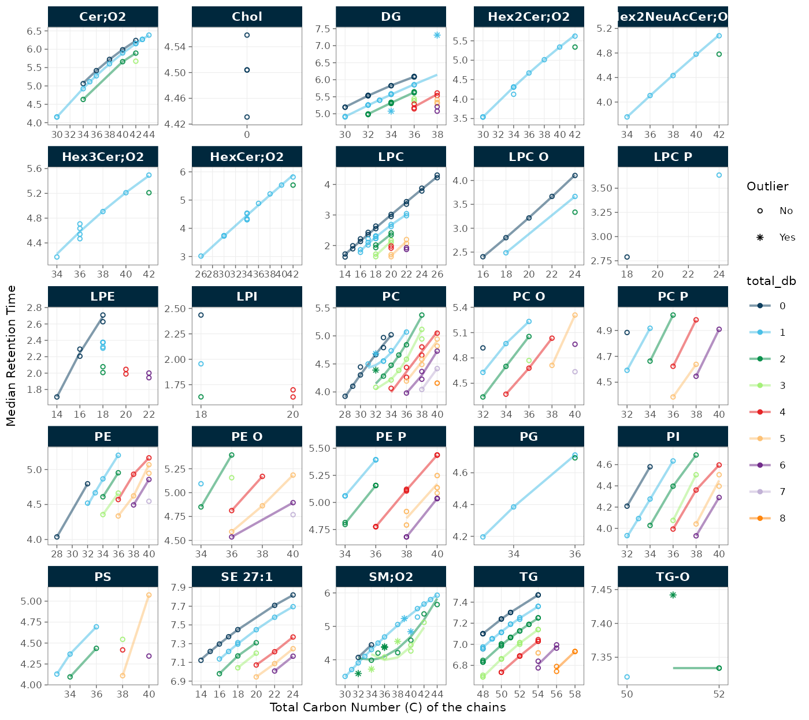
Figure 3. Retention time versus total carbon number per lipid class; labelled points flag possible misannotations.
7. Signal trends of internal standards
The internal standards (ISTDs) are our clearest window on instrument
stability. The same ISTD amount was spiked into every sample except the
solvent blanks (SBLK), so in the absence of technical
variation each ISTD should read a constant intensity across all samples
and sample types. Plotting them in injection order across the six
batches makes any drift, batch offset, or blockage immediately visible.
Setting output_pdf = TRUE saves the plots to the
output subfolder for closer inspection.
plot_runscatter(
myexp,
variable = "intensity",
qc_types = c("BQC", "TQC", "SPL", "PBLK", "SBLK"),
include_feature_filter = "ISTD",
exclude_feature_filter = "Hex|282",
cap_outliers = TRUE,
log_scale = FALSE,
show_batches = TRUE,
font_base_size = 5,
output_pdf = FALSE,
cols_page = 4, rows_page = 3
)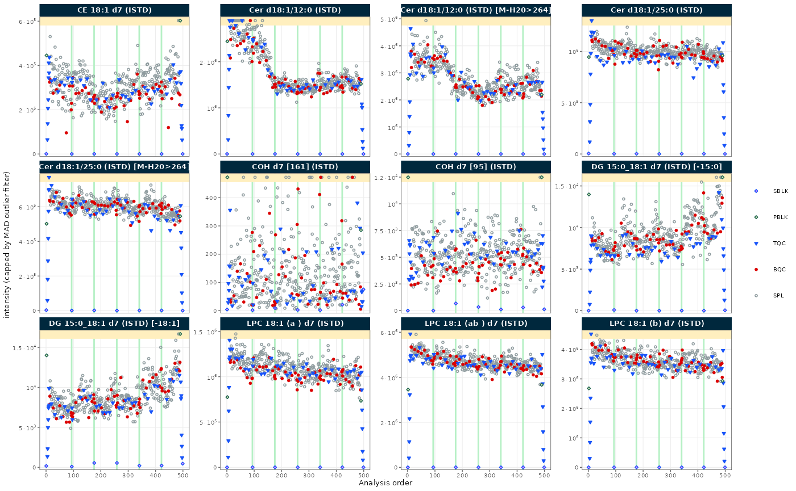
Figure 4. Internal-standard intensities across all six batches; the spiked amount is constant, so a flat trend is expected.
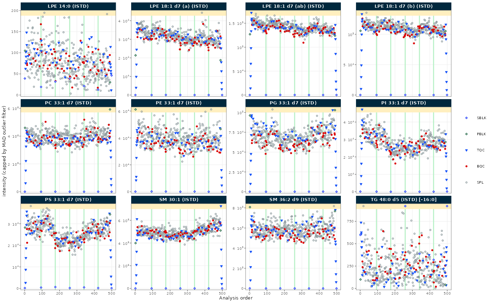
Figure 4. Internal-standard intensities across all six batches; the spiked amount is constant, so a flat trend is expected.
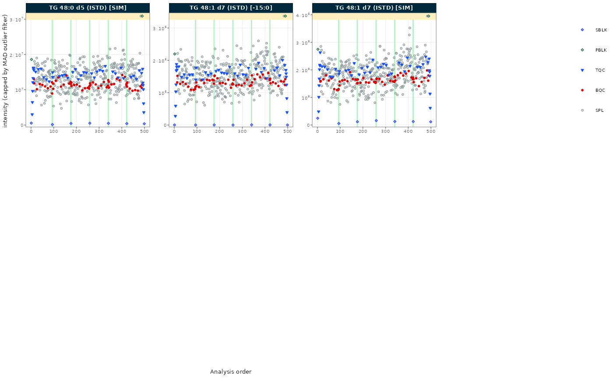
Figure 4. Internal-standard intensities across all six batches; the spiked amount is constant, so a flat trend is expected.
8. Adding detailed metadata
Everything from here on (sample roles, ISTD assignments, spike
amounts, concentrations) comes from the analysis metadata. The MRMhub
Excel template collects, organises, and pre-validates it in one place;
open the .xlsx file in the datasets folder to
see its structure. On import the metadata is validated: a hard error (a
duplicate or missing ID) stops the import with a summary of the
problems, while softer issues are reported as warnings you can work
through, or bypass with ignore_warnings = TRUE. We then fix
the processing order to the injection sequence with
set_analysis_order(), and tell MRMhub which of the imported
signal variables to treat as the working feature intensity
(set_intensity_var("area")), the value all subsequent
calculations start from.
myexp <- import_metadata_msorganiser(
myexp,
path = "datasets/sPerfect_Metadata.xlsx",
ignore_warnings = TRUE
)
Found no errors, 4 warnings, and no notes in the metadata.
----------------------------------------------------------------------------
Type Table Column Issue Count
1 W* Analyses analysis_id Analyses not in analysis data 15
2 W* Features feature_id Feature(s) without metadata 1
3 W* Features feature_id Feature(s) not in analysis data 4
4 W* ISTDs quant_istd_feature_id Internal standard(s) not used 1
----------------------------------------------------------------------------
E = Error, W = Warning, W* = Suppressed Warning, N = Note
----------------------------------------------------------------------------✔ Analysis metadata associated with 499 analyses.✔ Feature metadata associated with 502 features.✔ Internal Standard metadata associated with 17 ISTDs.✔ Response curve metadata associated with 12 annotated analyses.
myexp <- set_analysis_order(myexp, order_by = "timestamp")✔ Analysis order set to "timestamp"
myexp <- set_intensity_var(myexp, variable_name = "area")✔ Default feature intensity variable set to "feature_area"9. Overall trends and possible outliers
To judge technical trends that affect most analytes at once, the RLA (Relative Log Abundance) plot is the tool of choice (De Livera et al., Analytical Chemistry, 2015). Each feature is expressed relative to its across- or within-batch median and summarised as one boxplot per sample; a well-behaved sample sits tight around zero, so boxes that shift or spread flag pipetting errors, sample spillage, injection-volume changes, or drops in instrument sensitivity. In this run one sample stands out from its batch as a candidate technical outlier.
plot_rla_boxplot(
myexp,
variable = "intensity",
rla_type_batch = "within",
qc_types = c("BQC", "SPL", "RQC", "TQC", "PBLK"),
filter_data = FALSE,
show_timestamp = FALSE,
outlier_exclude = FALSE,
x_gridlines = FALSE,
batch_zebra_stripe = FALSE,
linewidth = 0.1
)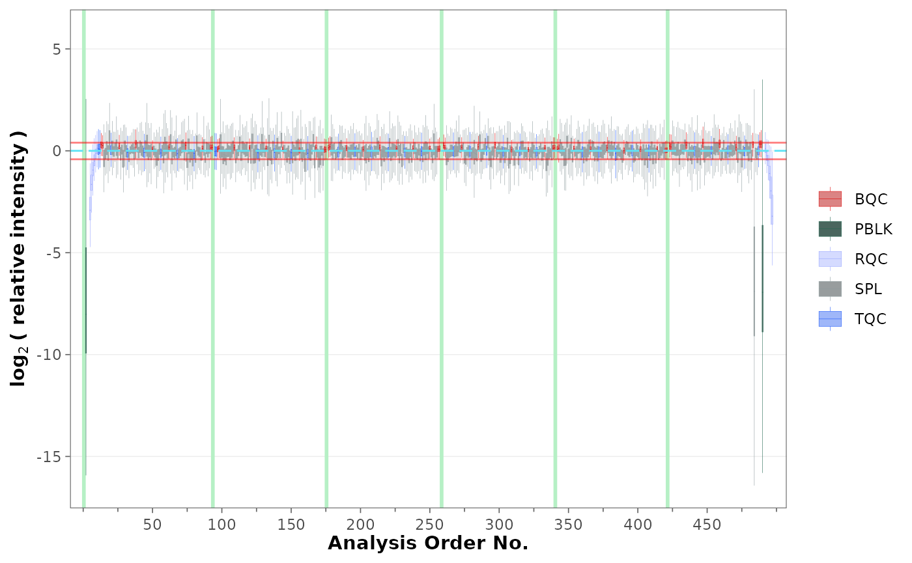
Figure 5. Within-batch relative log abundance per sample; deviating boxes flag pipetting, injection, or sensitivity issues.
10. PCA of all QC types
Principal component analysis condenses all features into a few axes and gives a complementary overview of how the study and QC samples relate, useful for spotting batch effects, technical outliers, and systematic differences between sample types. Here it offers a second, independent view of the candidate outlier flagged by the RLA plot.
plot_pca(
myexp,
variable = "feature_intensity",
qc_types = c("SPL", "BQC", "TQC"),
filter_data = FALSE,
pca_dims = c(1, 2),
labels_threshold_mad = 3,
log_transform = TRUE,
include_istd = FALSE,
point_size = 2, point_alpha = 0.7, ellipse_alpha = 0.3, font_base_size = 8
)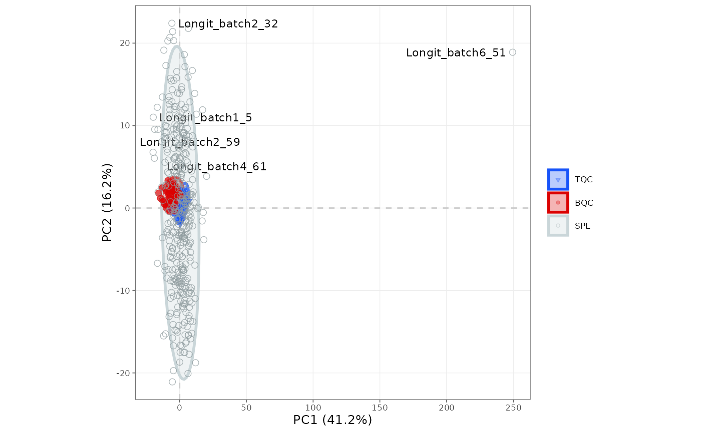
Figure 6. PCA of study and QC samples before outlier removal.
11. Excluding technical outliers
With the outlier corroborated by both plots, we remove it from all
downstream processing using exclude_analyses(). The
function does not delete any data: it sets the sample’s
valid_analysis flag to FALSE, so it is simply
skipped in later steps and can be reinstated at any time. Replotting the
PCA lets us confirm the effect of the exclusion on the sample
structure.
myexp <- exclude_analyses(
myexp,
analyses = "Longit_batch6_51",
clear_existing = TRUE
)
plot_pca(
myexp,
variable = "intensity",
qc_types = c("SPL", "BQC", "TQC"),
filter_data = FALSE,
pca_dims = c(1, 2),
labels_threshold_mad = 3,
log_transform = TRUE,
include_istd = FALSE,
shared_labeltext_hide = NA,
point_size = 2, point_alpha = 0.7, ellipse_alpha = 0.3, font_base_size = 8
)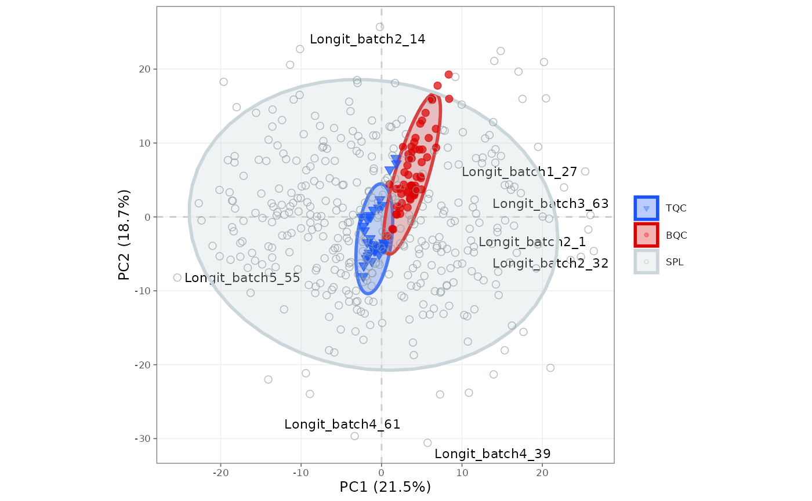
Figure 7. PCA after excluding the flagged technical outlier.
12. Response curves
A linear response is a prerequisite for comparing concentrations
between samples. Plasma lipid abundances span a wide dynamic range, and
because each class-specific ISTD is spiked at a single concentration,
the response may be linear near the ISTD level yet flatten for far more
or less abundant species. Verifying this is a worthwhile part of the
analytical quality assessment, so we measured injection-volume series at
the start and end of the run as a dedicated QC. We first drop the very
lowest-abundance features, then plot the curves for a subset of PC
species; include_feature_filter accepts regular
expressions, so any class or chain-length pattern can be selected.
myexp <- filter_features_qc(
myexp,
include_qualifier = FALSE,
include_istd = TRUE,
min.intensity.median.spl = 200
)
plot_responsecurves(
myexp,
variable = "intensity",
filter_data = TRUE,
include_feature_filter = "^PC 3[0-5]",
output_pdf = FALSE,
cols_page = 5, rows_page = 4
)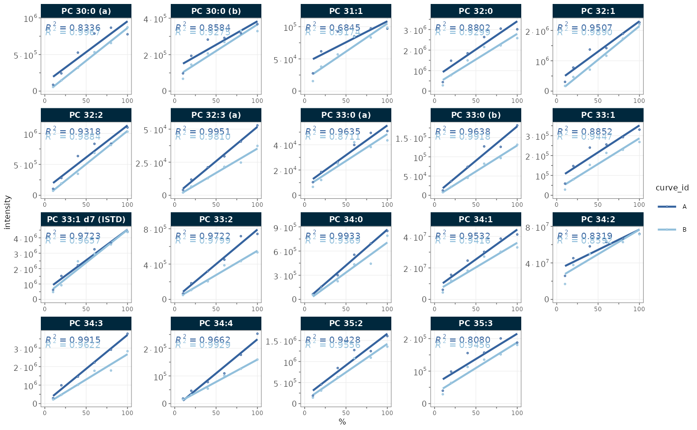
Figure 8. Response curves for selected PC species over the injection-volume series.
13. Isotope interference correction
Some peaks of interest are co-integrated with the isotopic peaks of
other lipid species, for example the M+2 isotope of a species two mass
units lighter falling in the same transition.
correct_custom_interferences() subtracts these declared
contributions from the raw feature intensities, reading which feature
interferes with which, and by how much, from the metadata; the original
values are preserved in feature_intensity_before. The
interference factors here were derived with LICAR (https://github.com/SLINGhub/LICAR). Inspect the
“Features (Analytes)” sheet of the metadata file to see which species
are affected.
myexp <- correct_custom_interferences(myexp)
plot_interference_correction(
myexp,
qc_types = c("BQC", "SPL", "TQC", "LTR")
)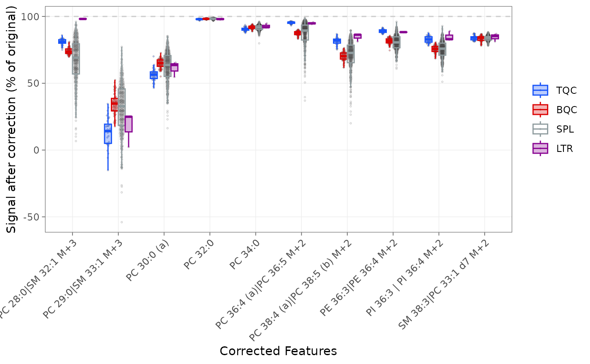
Figure 9. Selected species before and after isotope-interference correction.
14. Normalization and quantification based on ISTDs
Quantification proceeds in two steps.
normalize_by_istd() divides each lipid’s peak area by the
area of its assigned class-specific internal standard within the
same injection, writing the ratio to
feature_norm_intensity; this cancels most of the
injection-to-injection and matrix variation shared by an analyte and its
ISTD. quantify_by_istd() then converts those ratios into
absolute concentrations from three quantities held in the metadata (the
ISTD concentration in the spike solution, the spiked volume, and the
sample amount) and stores the result in feature_conc.
Because both new variables sit beside the raw areas, the RLA and PCA
plots above can be rerun on the normalised data with
variable = "norm_intensity" or
variable = "conc".
myexp <- normalize_by_istd(myexp)✔ 460 features normalized with 17 ISTDs in 498 analyses.
myexp <- quantify_by_istd(myexp)✔ 460 feature concentrations calculated based on 42 ISTDs and sample amounts of 498 analyses.✔ Concentrations are given in μmol/L.15. Effects of class-wide ISTD normalization
Class-specific ISTDs are common practice in lipidomics, but they are rarely authentic standards for every species they normalise. A non-authentic ISTD may elute at a different time, experience different matrix effects, and fragment differently, so its response can diverge from that of the analyte. Normalising against such an ISTD can then add variability rather than remove it. Because a good ISTD should reduce the coefficient of variation (CV), comparing the CV of QC and study samples before and after normalisation is a direct way to catch a misbehaving standard: a class whose CV rises after normalisation is a warning sign worth investigating before trusting its concentrations.
myexp <- filter_features_qc(
myexp,
include_qualifier = FALSE,
include_istd = TRUE,
min.intensity.median.spl = 1000
)
plot_normalization_qc(
myexp,
before_norm_var = "intensity",
after_norm_var = "norm_intensity",
plot_type = "diff",
qc_types = c("TQC", "BQC", "SPL"),
facet_by_class = TRUE,
point_size = 2,
y_lim = c(-5, 15)
)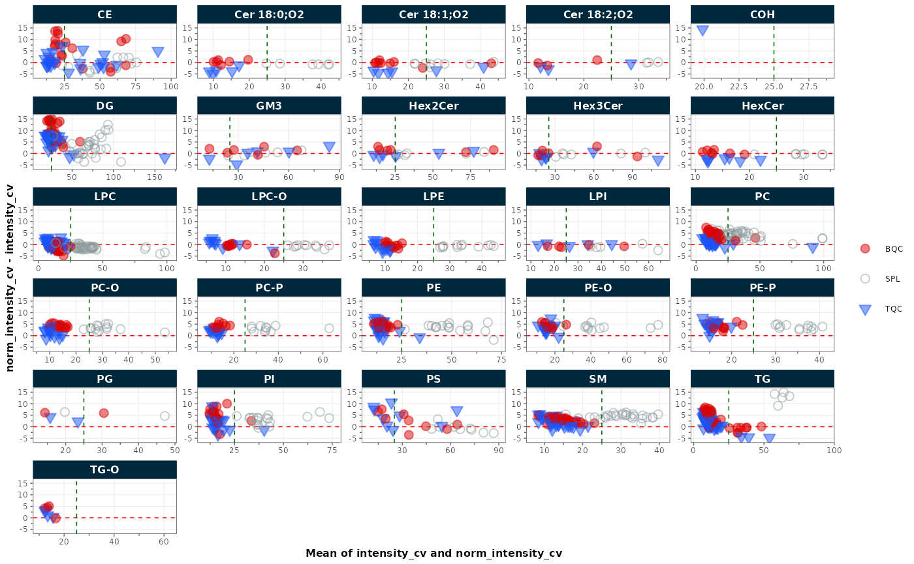
Figure 10. Change in CV per feature after ISTD normalisation, faceted by lipid class.
16. Drift correction
Even after ISTD normalisation, concentrations can drift gradually
within a batch as the instrument response changes. We correct this with
a Gaussian-kernel smoother fitted through the study samples in each
batch (batch_wise = TRUE), which suits large,
well-randomised sample sets like this longitudinal study;
kernel_size sets the width of the smoothing window. The
corrected values replace conc, the pre-correction values
are kept in conc_before, and the fitted trend in
conc_before_fit. The summary the function prints is not a
formal diagnostic of the fit but a quick check (reported as a change in
median CV) that the correction improved precision without introducing
artefacts. A scale correction along the fit is available via
scale_smooth = TRUE.
myexp <- correct_drift_gaussiankernel(
myexp,
variable = "conc",
ref_qc_types = "SPL",
ignore_istd = TRUE,
batch_wise = TRUE,
replace_previous = TRUE,
recalc_trend_after = TRUE,
kernel_size = 10,
outlier_filter = FALSE,
outlier_ksd = 5,
location_smooth = TRUE,
scale_smooth = FALSE,
show_progress = FALSE
)! 4 feature(s) contain one or more zero or negative `conc` values. Verify your data or use `log_transform_internal = FALSE`.! 1 features showed no variation in the study sample's original values across analyses. ! 1 features have invalid values after smoothing. NA will be be returned for all values of these faetures. Set `use_original_if_fail = FALSE to return orginal values..! Smoothing failed for 1 feature(s) in all batches. Please check data, metadata, and fit parameters.! Smoothing failed for 1 feature(s) in at least one batch: PG 36:2. Please check data, metadata and fit parameters.✔ Drift correction was applied to 459 of 460 features (batch-wise).ℹ The median per-feature CV change of all features in study samples was -1.00% (range: -12.53% to 2.59%; a positive value means the CV increased). The median CV across all features across batches decreased from 39.00% to 37.71%.To see the effect, we plot one example species (PC 40:8) before and
after correction. Since we reuse the same plot several times, we wrap it
in a small function with the recurring parameters preset;
variable selects which stage to show
(conc_before or conc) and feature
which species.
my_trend_plot <- function(variable, feature) {
plot_runscatter(
myexp,
variable = variable,
qc_types = c("BQC", "TQC", "SPL"),
include_feature_filter = feature,
exclude_feature_filter = "ISTD",
cap_outliers = TRUE,
log_scale = FALSE,
show_trend = TRUE,
output_pdf = FALSE,
cols_page = 1, rows_page = 1
)
}
my_trend_plot("conc_before", "PC 40:8")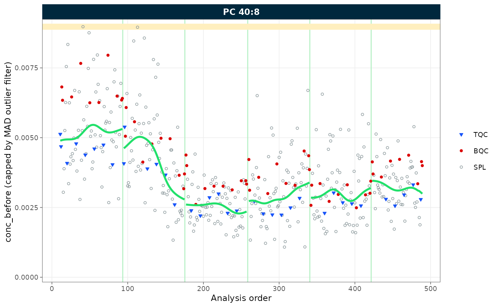
Figure 11. PC 40:8 raw concentrations before drift correction, with the fitted within-batch trend.
my_trend_plot("conc", "PC 40:8")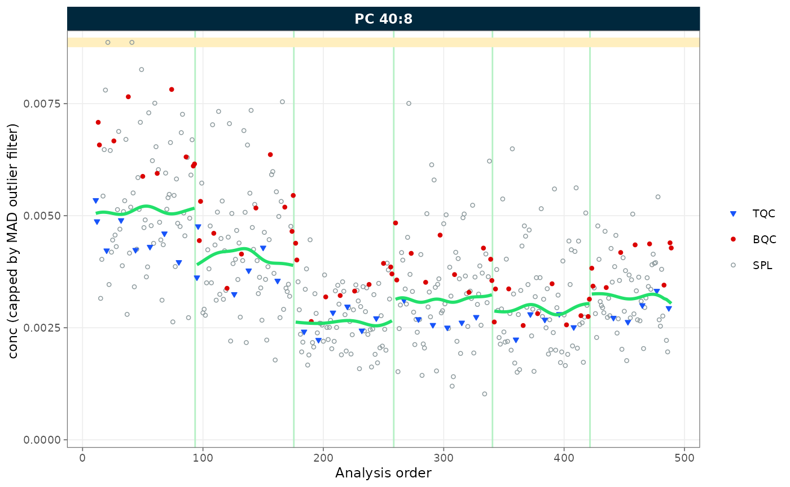
Figure 12. PC 40:8 concentrations after within-batch drift correction.
17. Batch-effect correction
Drift correction flattens the trend inside each batch but leaves the
batches at different levels, since each is fitted independently.
correct_batch_centering() aligns them by shifting every
batch to a common median, computed from the study samples
(ref_qc_types = "SPL"); correct_scale = TRUE
additionally equalises the between-batch spread. As with drift
correction, the aligned values replace conc and the
previous ones are retained in conc_before. We replot the
example species to confirm the batches now line up.
myexp <- correct_batch_centering(
myexp,
variable = "conc",
ref_qc_types = "SPL",
replace_previous = TRUE,
correct_location = TRUE,
correct_scale = TRUE,
log_transform_internal = TRUE
)
my_trend_plot("conc", "PC 40:8")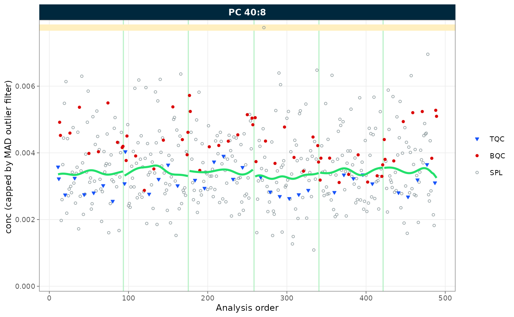
Figure 13. PC 40:8 after drift correction followed by batch centering; batch trends are aligned.
18. Saving runscatter plots of all features as PDF
For a full record it helps to save runscatter plots for every
species, or a chosen subset, to a multi-page PDF in the
output subfolder. Blanks are usually worth excluding, as
they can show erratic concentrations when feature and ISTD signals sit
close together or below the limit of detection. The
include_feature_filter and
exclude_feature_filter arguments select analytes and both
accept regular expressions, which a language model can help you
construct for more intricate patterns.
plot_runscatter(
myexp,
variable = "conc",
qc_types = c("BQC", "TQC", "SPL"),
include_feature_filter = NA,
exclude_feature_filter = "ISTD",
cap_outliers = TRUE,
log_scale = FALSE,
show_trend = TRUE,
output_pdf = TRUE,
path = "./output/runscatter_after-drift-batch-correction.pdf",
page_width = 297, page_height = 210,
cols_page = 2, rows_page = 2,
show_progress = TRUE
)page_width and page_height set the page
size; without them an A4 page is used, oriented by
page_orientation.
The single figures made earlier in this workflow are saved with
save_plot(), which writes any plot at a defined size and
resolution and can produce several formats in one call:
plot_pca(myexp, variable = "conc", qc_types = c("BQC", "SPL")) |>
save_plot(path = "./output/pca", format = c("pdf", "png"),
width = 180, height = 120)The plot is returned visibly, so it still appears in the notebook while being written to file.
See Saving plots for the available formats and when to prefer a vector or a raster one.
19. QC-based feature filtering
The final curation step removes features that fail defined QC
criteria. filter_features_qc() combines several: the
quality of the response curves (minimum r², slope, and maximum
y-intercept), the signal-to-blank ratio against process blanks, the
absolute signal level as a proxy for the limit of detection, and the
precision in the batch QCs (max.cv.conc.bqc). The criteria
are applied hierarchically (a feature counts as failing CV only
once it has passed the S/B and signal filters) and
features.to.keep retains named species regardless. The
filter can be run repeatedly, overwriting or, with
clear_existing = FALSE, amending the previous set.
myexp <- filter_features_qc(
myexp,
clear_existing = TRUE,
use_batch_medians = TRUE,
include_qualifier = FALSE,
include_istd = FALSE,
response.curves.selection = c(1, 2),
response.curves.summary = "mean",
min.rsquare.response = 0.8,
min.slope.response = 0.75,
max.yintercept.response = 0.5,
min.signalblank.median.spl.pblk = 10,
min.intensity.median.spl = 100,
max.cv.conc.bqc = 25,
features.to.keep = c(
"CE 20:4", "CE 22:5", "CE 22:6", "CE 16:0", "CE 18:0"
)
)! %CV not computed for 4440 feature×QC-type×variable combinations with fewer than 3 replicates (LTR: 4440).✔ QC metrics calculated for 502 features across 7 sample types, including normalized-intensity, concentration, and response-curve statistics.! The QC parameter min.intensity.median.spl contains NAs for the following features: LPC O-22:1, PC 34:5, PC 35:1, SM 35:1|PC P_32:1 M+1, and SM 35:1|PC P-32:1 M+1. These features failed QC.! The QC parameter min.signalblank.median.spl.pblk contains NAs for the following features: LPC O-22:1, PC 34:5, PC 35:1, PG 36:2, SM 35:1|PC P_32:1 M+1, and SM 35:1|PC .... These features failed QC.! The QC parameter max.cv.conc.bqc contains NAs for the following features: Cer d18:1/12:0 (ISTD) [M-H20>264], Cer d18:1/25:0 (ISTD) [M-H20>264], Hex2Cer.... These features failed QC.! The following features were forced to be retained despite not meeting filtering criteria: CE 16:0, CE 20:4, CE 22:5, and CE 22:6✔ New feature QC filters were defined: 324 of 423 quantifier features meet QC criteria (not including the 25 quantifier ISTD features).20. Summary of the QC filtering
The plot below summarises the filtering per lipid class. Green
segments count the species that passed every criterion; the remaining
segments count those that failed each one. Because the criteria are
hierarchical, a species is attributed to the first filter it
fails (for example CV), having already cleared the lower
ones (S/B, LOD), so the counts partition the
features rather than double-counting them.
plot_qc_summary_byclass(myexp)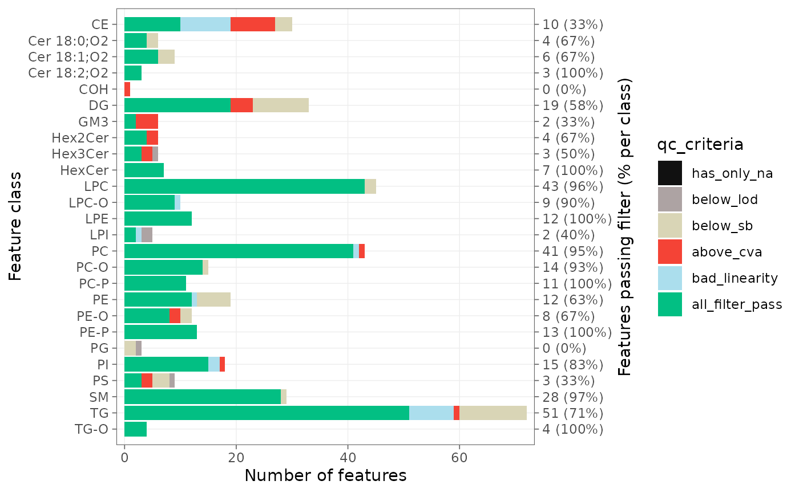
Figure 14. Feature QC filtering outcome per lipid class; green marks species passing all criteria.
The next plot gives the same picture across all features, with the total retained, and adds a Venn diagram showing how many features each individual criterion excluded, and where those exclusions overlap.
plot_qc_summary_overall(myexp)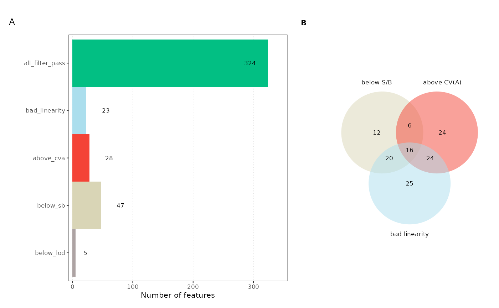
Figure 15. Overall feature filtering summary with a Venn diagram of exclusion criteria.
21. Lipidome profile
As a final sanity check, we plot the concentration profile of the filtered dataset. Comparing these values (the most abundant species, the summed concentration per class, or the ratios between classes) against in-house reference ranges or the literature is the quickest way to confirm that quantification landed in a plausible range and that no gross errors slipped through.
plot_abundanceprofile(
myexp,
variable = "conc",
qc_types = "SPL",
filter_data = TRUE,
log_scale = TRUE,
x_label = NA,
feature_map = "lipidomics"
)
Figure 16. Concentration profile of the filtered study-sample lipidome.
22. Saving a report with data, metadata and processing details
The full post-processing can be written to a formatted Excel workbook, with separate sheets for the raw and processed datasets, the associated metadata, the per-feature QC metrics, and a record of the processing steps applied: a self-contained account of how the numbers were produced.
save_report_xlsx(myexp, path = tempfile(fileext = ".xlsx"))✔ The data processing report of experiment 'sPerfect' has been saved to /tmp/RtmptK4vpU/file40a222401fe2.xlsx.For downstream statistics it is often easier to export a single flat, wide CSV of a chosen data subset. This is the format used to share the data for the statistical analysis in the next part of the workshop.
save_dataset_csv(
myexp,
path = tempfile(fileext = ".csv"),
variable = "conc",
qc_types = "SPL",
include_qualifier = FALSE,
filter_data = TRUE
)23. Sharing the MRMhubExperiment dataset
Finally, the whole myexp object can be serialized to an
RDS file and shared. RDS files open in any R
session (even without the mrmhub package installed) and the saved
MRMhubExperiment can be reloaded for further processing,
replotting, or inspection with mrmhub.
Next steps
- Drift and batch correction: correction methods and diagnostics in depth
- RunScatter and PCA QC exploration: QC visualisation in depth
- Interference correction: correcting isotopic and isobaric overlap
- External calibration & QC: quantify with external calibration curves